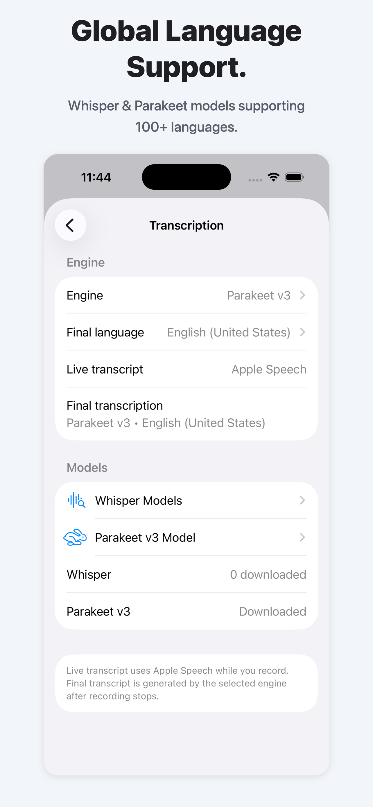
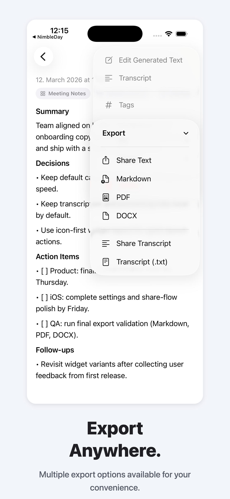
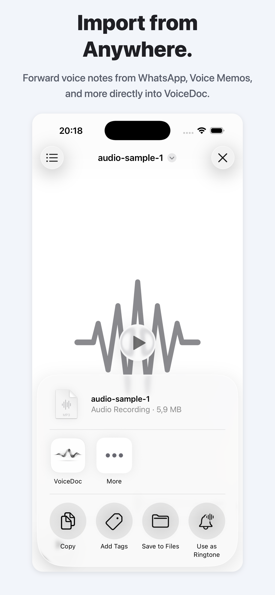

AI Powered Templates
Structure your transcripts and notes with ease. Use built-in templates or create your own custom formats to perfectly organize your ideas.
- ⚡️ Built-in & Custom Templates
- 🎯 Flexible Workflows

Global Language Support
Choose from Apple Speech, Whisper, and Parakeet model paths. Capture quick live transcript previews and produce better final transcripts after recording.

Export Anywhere
Multiple export options available for your convenience. Share your structured notes and raw transcripts to any app or service instantly.

Import from Anywhere
Seamlessly bring your audio into VoiceDoc. Forward voice messages from WhatsApp, Voice Memos, or any other app directly via the iOS Share Sheet.
- 💬 WhatsApp & Telegram support
- 🎙️ System-wide Share Extension

Unlock VoiceDoc Pro
Unlimited Documents
Remove the free 3-document limit and keep your full library in one place.
Share From Anywhere
Import shared text and audio from other apps directly into VoiceDoc workflows.
Widgets
Launch voice capture or text note entry quickly from your Home Screen.
Export & Share
Export generated documents in Markdown, PDF, and DOCX and share them instantly.